Systemhandbuch mit 12 Kapiteln. Franchise erst nach einem Pilotbetrieb
PDF · A4 zum Ausdrucken
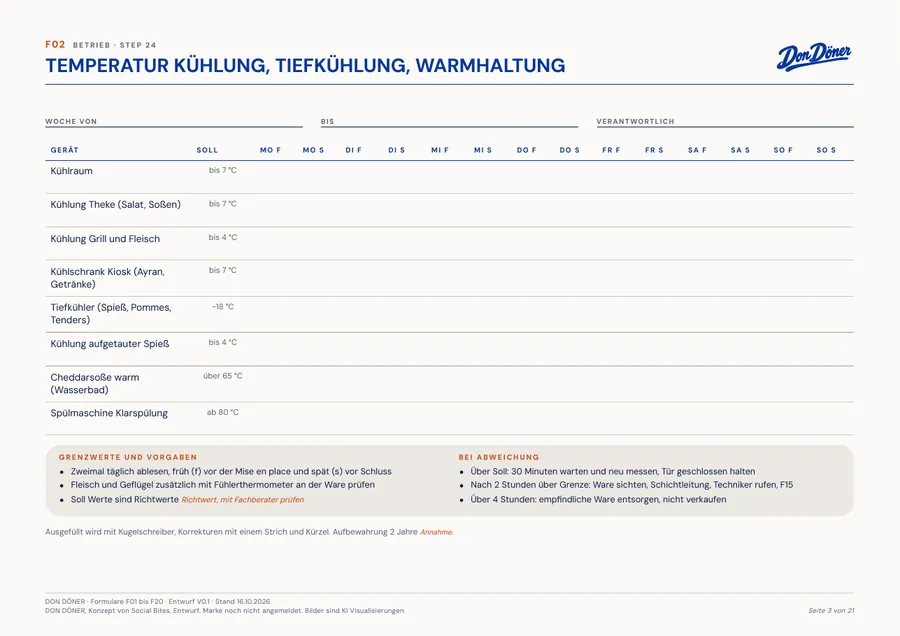
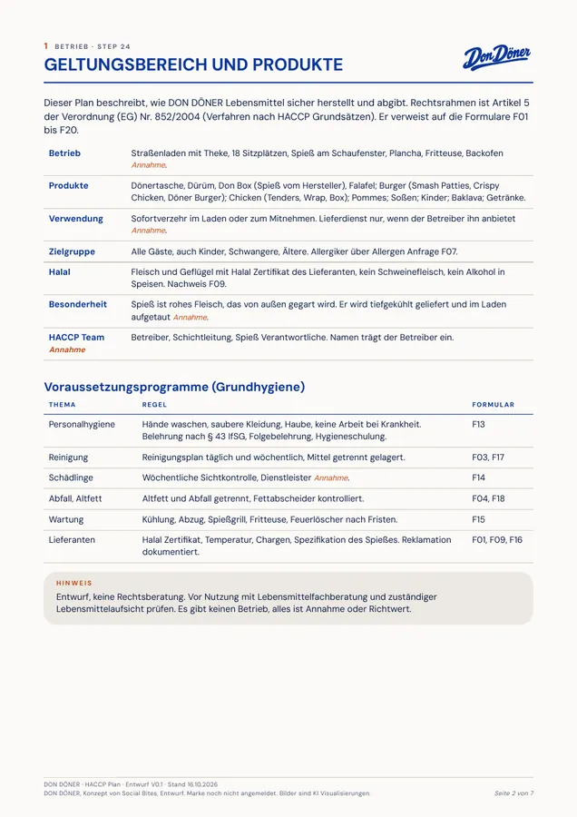
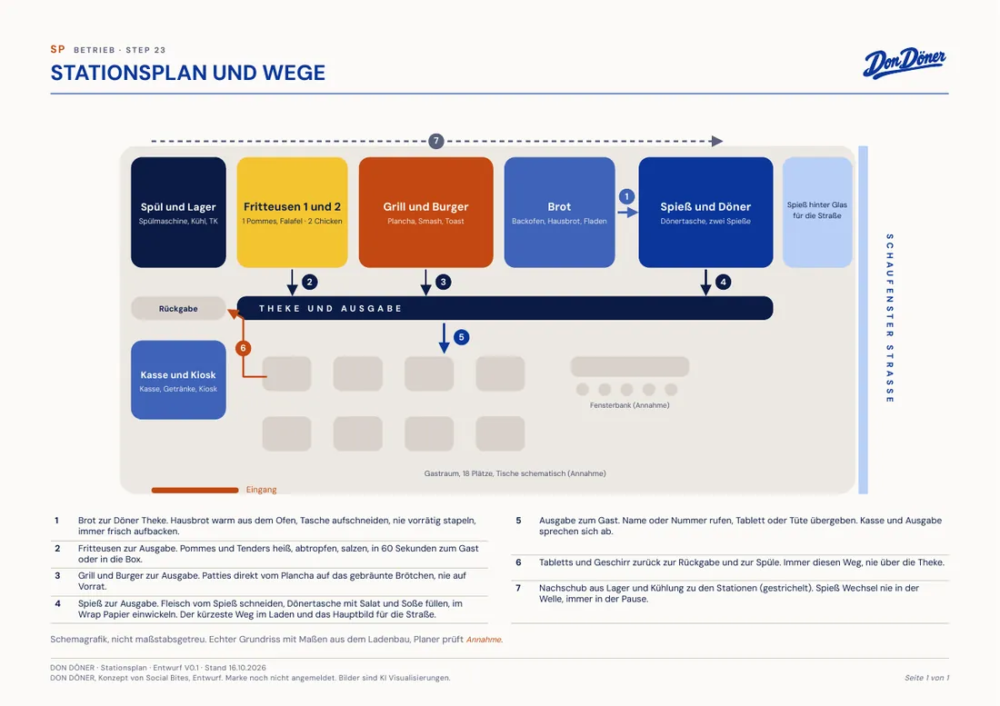
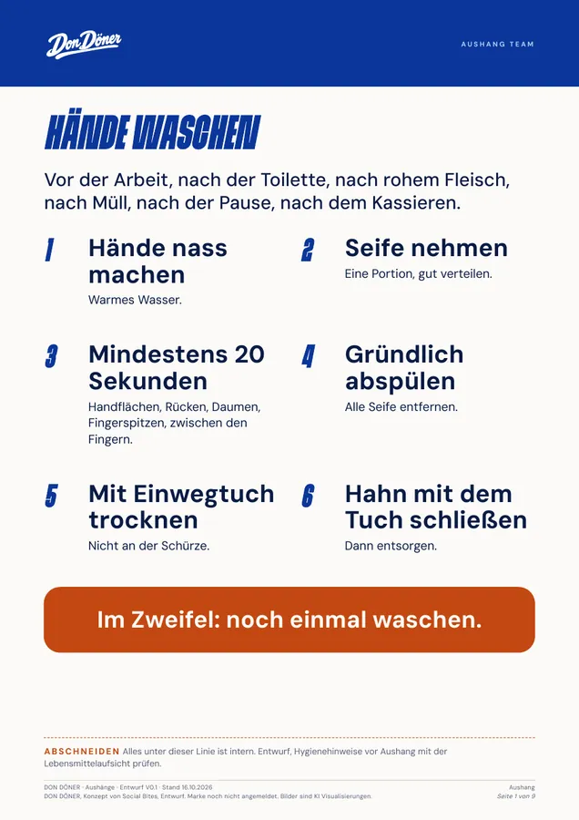
07 · Technik
Bestell Terminal. Läuft als Prototyp.
Kiosk, Küchenmonitor und Abholmonitor mit Allergen Filter, Konfigurator und Upsell. Dazu vier Menüboards fürs TV als Video und PDF. Bezahlung ist nur simuliert.
Start, Hier essen oder Mitnehmen
Konfigurator für den Don mit Pflichtwahl
Warenkorb, Nummer, Bon
Website und Menüboards im selben Look
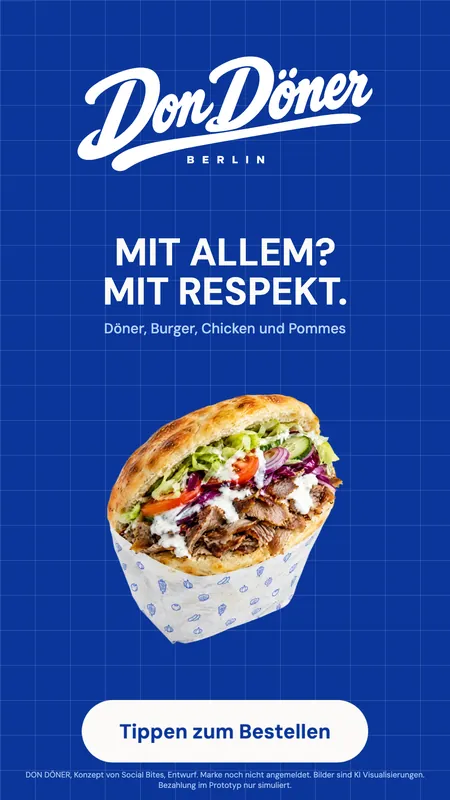
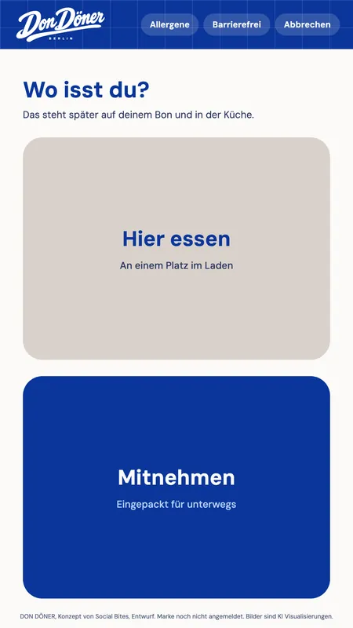
Präsentationen
Alles, was du zeigst, ist schon gebaut.
Verkaufspitch, Produktvortrag, zwei Mietflächen Decks, Promotions und Eröffnung. Dazu das Brandbook. Zusammen über 75 Seiten.
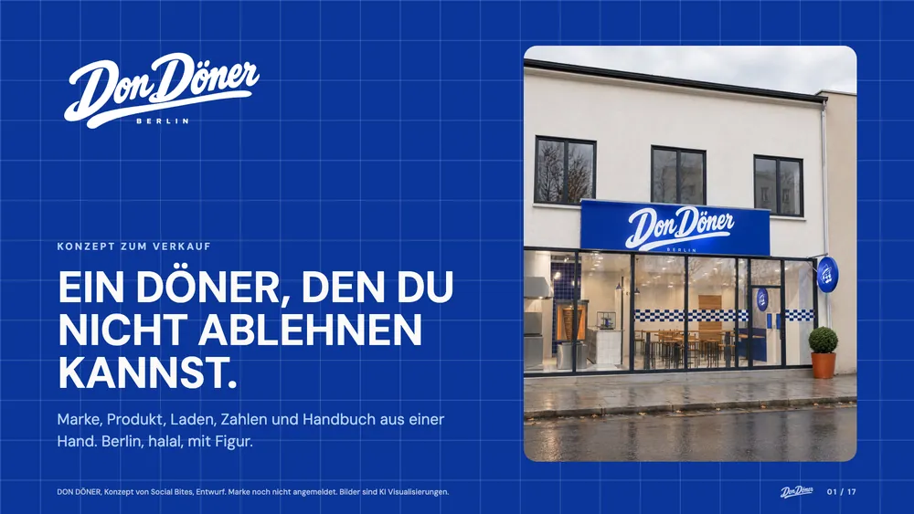
Verkaufspitch
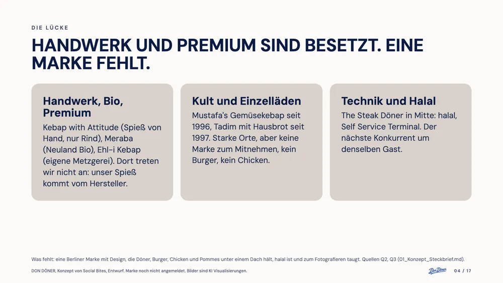
Verkaufspitch
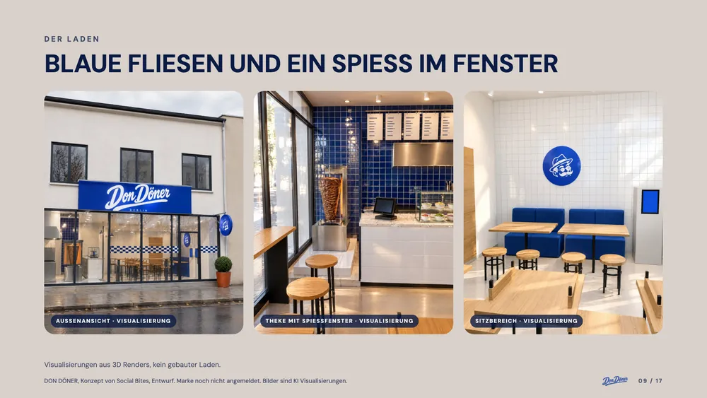
Verkaufspitch
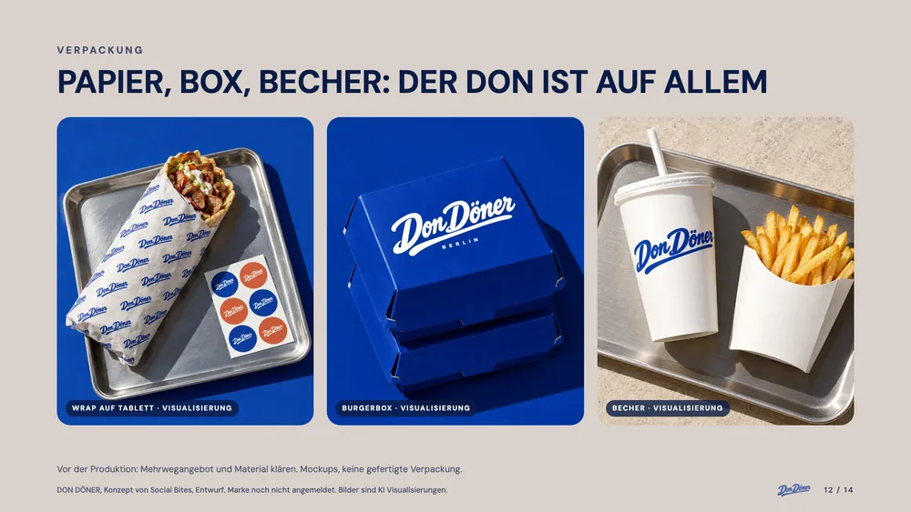
Produktvortrag
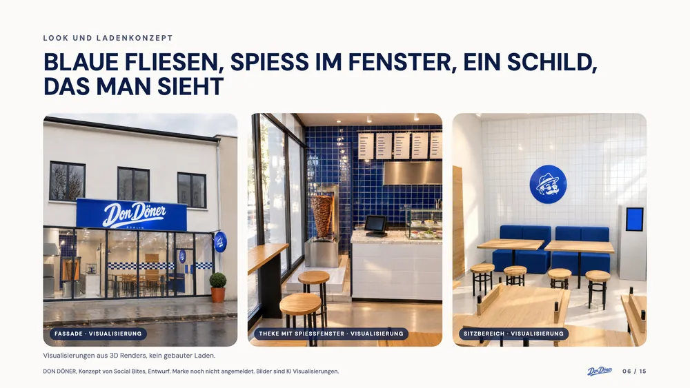
Mietflächen City
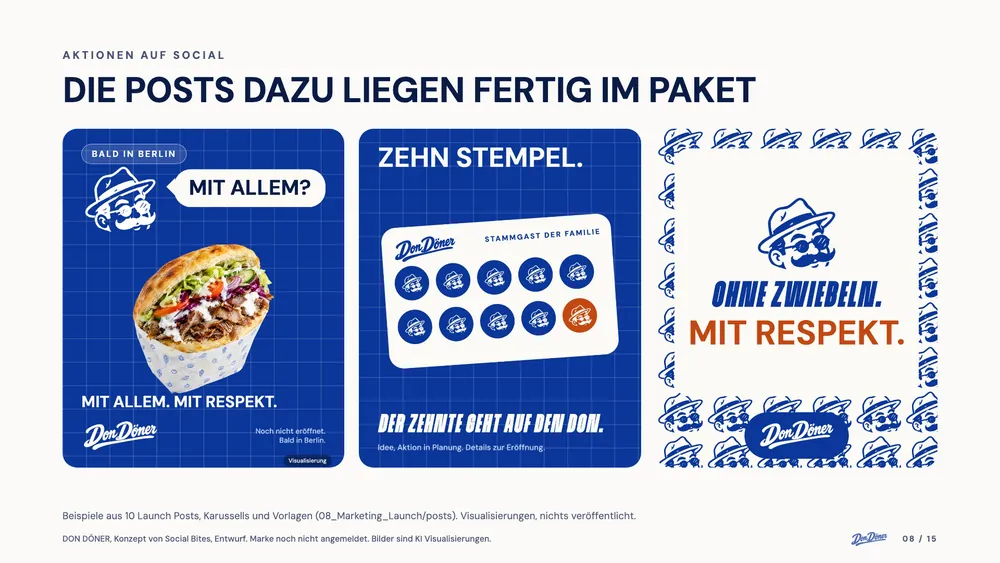
Promotions und Eröffnung
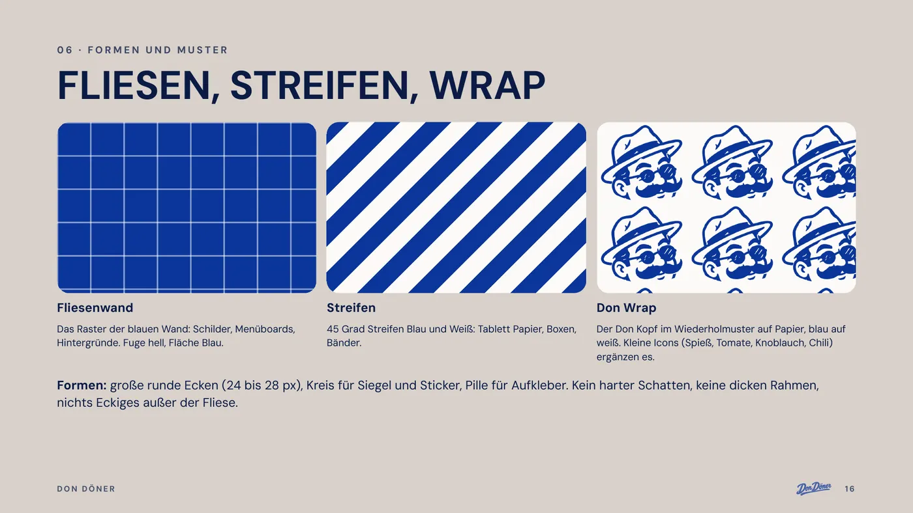
Brandbook
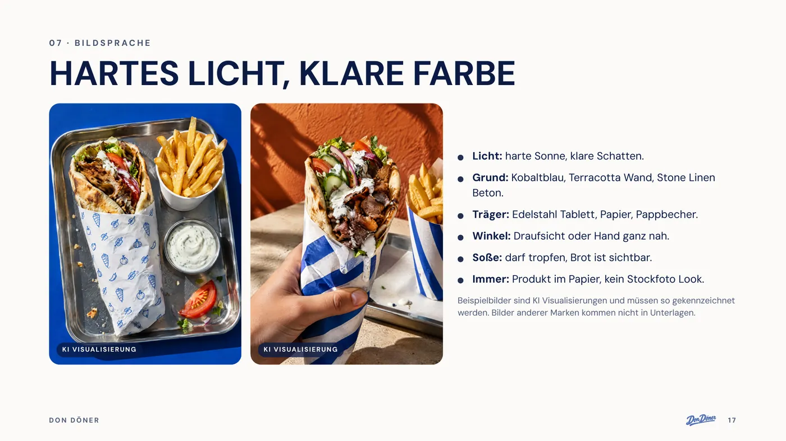
Brandbook
08 · Zahlen und Recht
Rechnen, bevor man baut.
Businessplan in Excel: Annahmen, Investition, Miete, drei Szenarien, drei Jahre, Break even, 36 Monate
Kalkulation für alle Gerichte und Menüs mit Wareneinsatz
Alle Werte sind Planwerte aus Annahmen: kein Pilot, kein Testverkauf, keine Lieferantenangebote. Basis liegt nur knapp über der Schwelle (Break even bei ████ Bons pro Tag, geplant sind ████). Das konservative Szenario trägt sich nicht (EBITDA Jahr 3 ██████████████). Umsatz pro m² ist ungetestet, die Personalquote liegt bei ██████.
Das Paket
Modelle und Preise.
Konzept Paket██████████████Rechte an Name und CI gehen über. Preise sind Vorschläge.
Alle sieben Bereiche von oben als Dateien
Rechteübergang erst nach Markenanmeldung und Vertrag mit Anwaltsprüfung
Rezepte, Businessplan und Handbuch nach NDA
Lizenz██████████████Marke und Rezepte für einen Standort
Social Bites bleibt Inhaber
Einmalpreis plus laufende Gebühr (Modell)
Umsetzung mit uns██████████████Opening, Content, Creator, Betreuung
Planung bis Eröffnung und Social Media Launch
Paketpreis plus Monatspreis (Modell)
Ehrlich dazu: das ist nicht dabei
Kein Pilotbetrieb und kein Testverkauf. Alle Zahlen sind Planwerte.
Marke noch nicht angemeldet, die Recherche im Register steht aus.
Kein Franchise. Das gibt es erst nach einem erfolgreichen Pilotbetrieb (DFV Richtlinie).
Keine Genehmigungen, kein Standort, keine Lieferantenverträge.
Halal nur mit Zertifikat des Lieferanten. Das Konzept ist darauf angelegt.
Keine Ergebnisgarantie. Alle Bilder sind KI Visualisierungen.